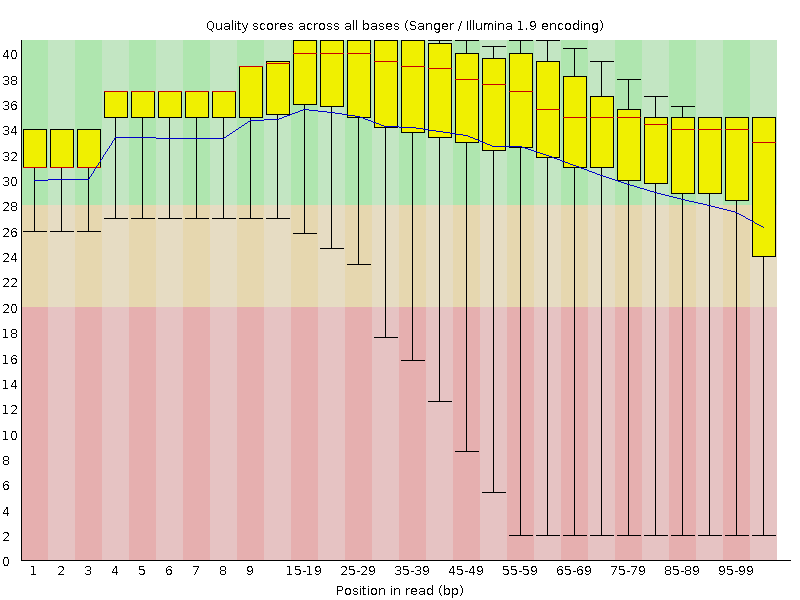
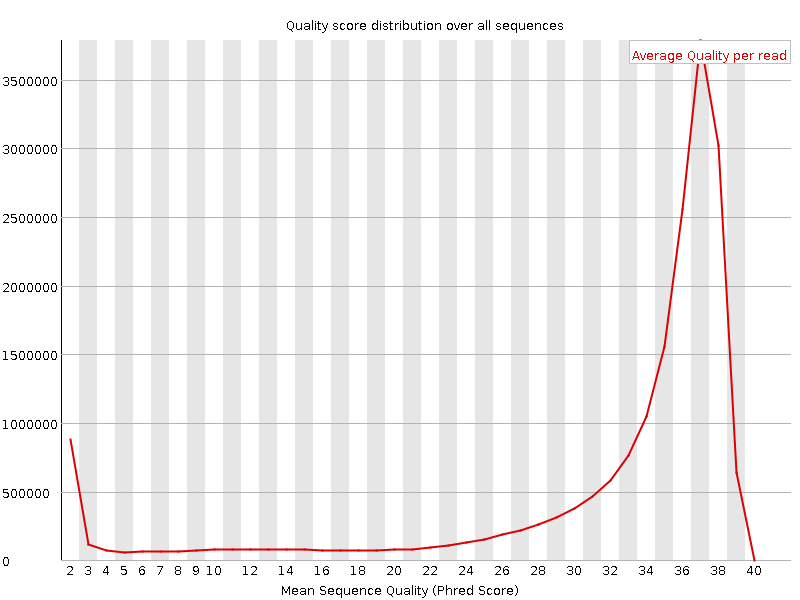
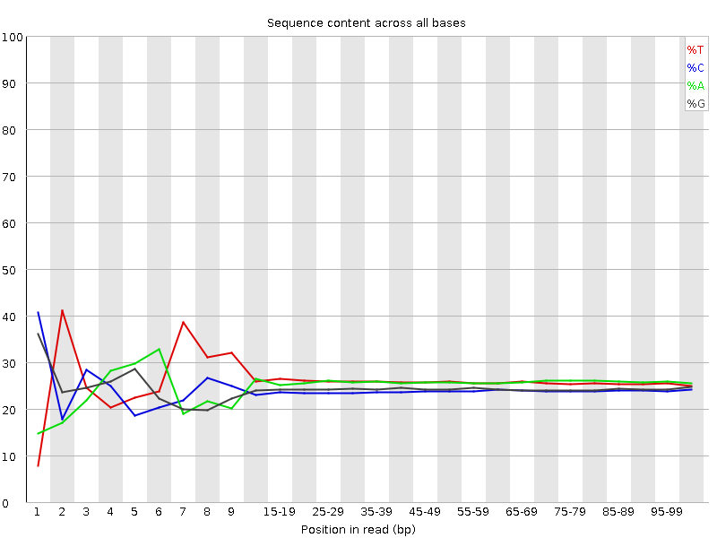
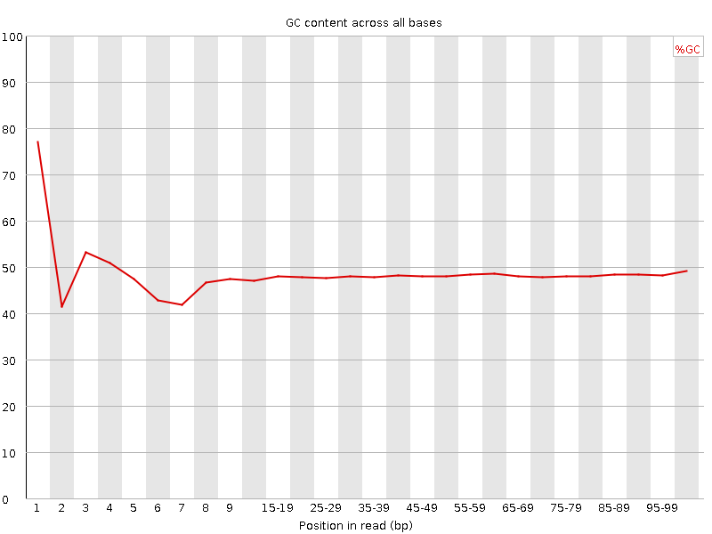
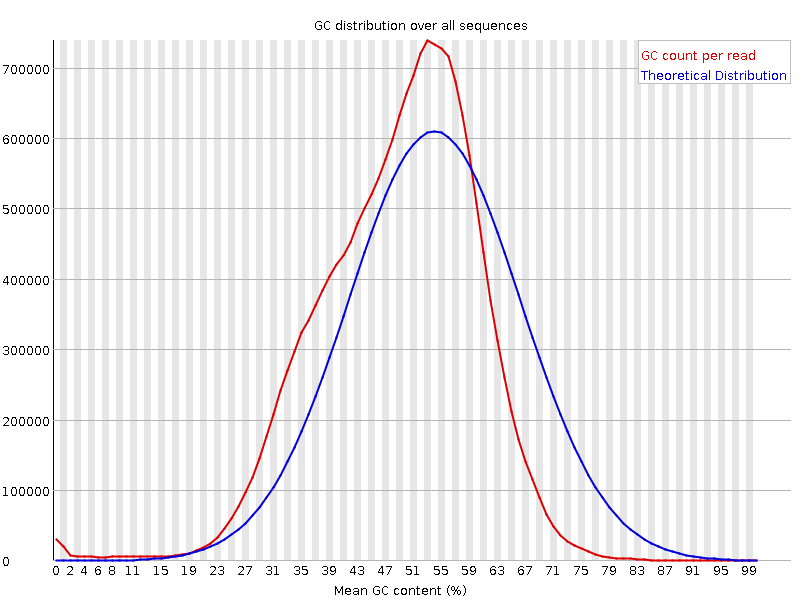
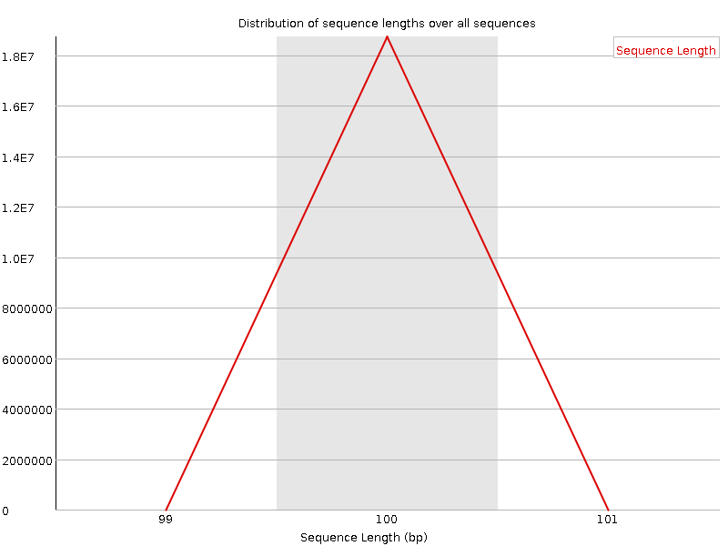
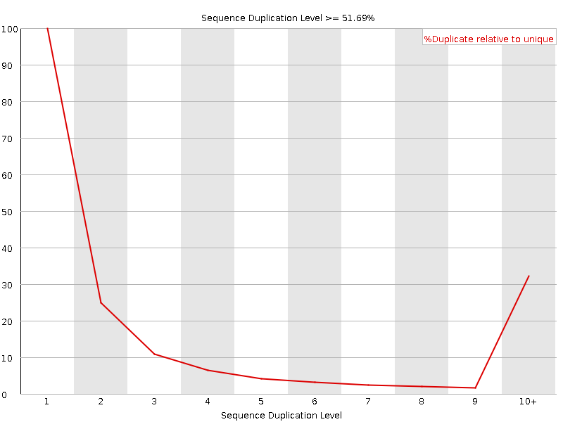

![[OK]](Icons/tick.png) Basic Statistics
Basic Statistics
| Measure | Value |
|---|---|
| Filename | F_notatus_NA_FW_3_R2.fastq.gz |
| File type | Conventional base calls |
| Encoding | Sanger / Illumina 1.9 |
| Total Sequences | 18730504 |
| Filtered Sequences | 0 |
| Sequence length | 100 |
| %GC | 48 |
Per base sequence quality

Per sequence quality scores

![[FAIL]](Icons/error.png) Per base sequence content
Per base sequence content

Per base GC content

Per sequence GC content

Per base N content

Sequence Length Distribution

Sequence Duplication Levels

![[WARN]](Icons/warning.png) Overrepresented sequences
Overrepresented sequences
| Sequence | Count | Percentage | Possible Source |
|---|---|---|---|
| TTTTTTTTTTTTTTTTTTTTTTTTTTTTTTTTTTTTTTTTTTTTTTTTTT | 52991 | 0.2829128356610159 | No Hit |
Kmer Content

| Sequence | Count | Obs/Exp Overall | Obs/Exp Max | Max Obs/Exp Position |
|---|---|---|---|---|
| TTTTT | 17054785 | 8.029047 | 14.331038 | 2 |
| AAAAA | 10679310 | 5.336793 | 10.3527775 | 70-74 |
| CTCCT | 4199260 | 2.519241 | 9.563006 | 1 |
| TCCTC | 4130435 | 2.4779513 | 5.9912977 | 2 |
| CTCCA | 3878435 | 2.3547094 | 8.163436 | 1 |
| GAAGA | 4018035 | 2.2216828 | 5.8959265 | 6 |
| CTCTG | 3724170 | 2.1937287 | 6.0666313 | 1 |
| CTGGA | 3709725 | 2.171378 | 7.228676 | 1 |
| CTTCA | 3638110 | 2.0373404 | 5.279148 | 1 |
| CTTTT | 3629545 | 1.8525205 | 5.7457185 | 1 |
| CTGAA | 3291055 | 1.8313156 | 5.474816 | 1 |
| GTTTT | 3539040 | 1.7735881 | 7.673694 | 1 |
| GGAAG | 3021560 | 1.757378 | 5.5486546 | 5 |
| CTCAG | 2860525 | 1.7052302 | 6.550551 | 1 |
| GGAAA | 3039580 | 1.6806681 | 5.656914 | 1 |
| AAGAG | 2856890 | 1.5796537 | 5.1919975 | 7 |
| CTGGG | 2536575 | 1.5617337 | 6.3362107 | 1 |
| AGAGC | 2492895 | 1.4766634 | 6.8612766 | 8 |
| CTCCC | 2178335 | 1.4168199 | 5.6046414 | 1 |
| GAGCG | 1493950 | 0.93084884 | 6.5582647 | 9 |
| GATCG | 980360 | 0.5738247 | 5.703227 | 1 |
| ATCGG | 917150 | 0.5368266 | 5.6086617 | 2 |